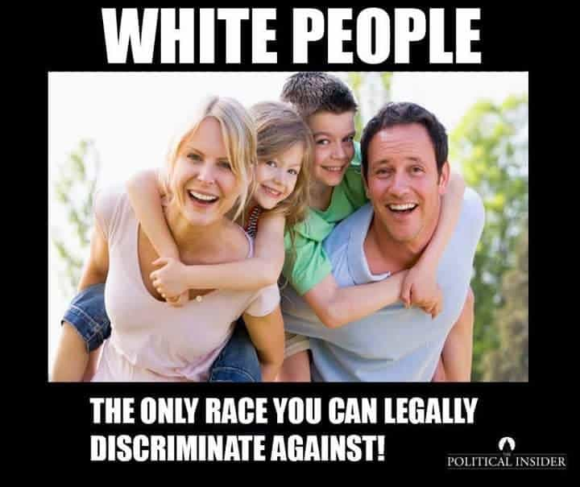

Edgar Tru is a Southern-based objectivist, natural-minded contrarian, and eleutheromania. Follow me on Gab.


It is obvious, in twenty-first century America, that European-Americans are the most privileged group in the country. We essentially are the bees knees and everyone else is oppressed just because we exist. So, as a white man, I want to share how I enjoy my white privilege.
If a black man rants and raves on about how he hates me just because of my ethnic heritage, he cannot be racist. That is impossible. If a Jewish professor advocates all whites commit mass-suicide due to slavery, or that until the white race is gone we cannot rid our society of ‘oppression,’ he clearly isn’t a racist.
See, as a cisgender heterosexual white male, I am the cherry on top. Even if crime stats display black-on-white crime is far worse than the contrary, it really is because we’re oppressing them; therefore, it’s not racist.
I love my privilege.
If I want to sport a Kolovrat (Slavic Swastika, sunwheel, spinning cross, circle of life) necklace, that’s clearly a pendant of racial hatred and that automatically makes me a flaming racist; thus, I am a bad person.
If I like the Celtic cross, I cannot wear that without people seeing a living, breathing Nazi marching their way while Adolf Hitler gives a speech in the background. That, or I’m a backwoods-dwelling hillbilly Ku Klux Klan member.
I’m also not allowed to be proud of my ancestry and all the years of war, trial and error, hells and glories. I cannot appreciate my people’s poets and writers, musicians and philosophers, or the pre-Christian Pagan path, or our dances or architecture or family traditions. But every other race can.
See, it doesn’t matter if I’m part of a long history of people and it’s my turn to carry on their story. I do not get that opportunity without potentially suffering, societally speaking. I am told to abandon it altogether.
I love my privilege.

European-Americans and Asian-Americans are the two groups you can legally discriminate against, in the open and on enforced policy, based solely on our ethnicity through the means of Affirmative Action.
Isn’t it fun to wonder whether checking your race on that job application, or college you’re applying for, might cost you the position or slot?
Marxism must be enforced and outcome of equality is the set standard. It’ll never happen, but America seems to think that is actually possible. Therefore, the white man must be told, and forced, to step down and move aside.
I love my privilege.
If I dare slip up and utter a racial slur, it is damn near the apocalypse. And, if I’m really unfortunate and caught and I’m famous, then I need to go on a bunch of late-night talk shows and apologize to a potential million people of whom I’ve offended.
But a man of African heritage or a Hispanic may go on calling me a cracker or whitey all they please. But that’s obviously not racist because I’m super privileged and my existence oppresses them. See, they’re really giving it hard to ‘the man.’ It’s almost like they’re only defending themselves and my words might as well be literal violence.
I love my privilege.
Sarcasm aside, who is really the most privileged in contemporary America? Well, let us see here. Who is the one group you dare not criticize over all other groups? Who is the apparent minority that somehow manages to operate much of Hollywood and mainstream media? Who is the group that gets to perpetuate their moral compass and their politics due to owning so much control over film and media? Who is fine seeing another entire group of people be trampled on just so they can keep their little ethno-state, and the West is totally cool with it?
People do not have to like it, but it is obviously the Jewish folk. To me, if I was to talk about who is really privileged, it’d be them. I do not feel privileged. I’m not saying my life was hardcore and that I fought gangs off to see the light of another day, but that word doesn’t sit well with me. And, to be a blunt bastard here, if I am privileged, then I do not care.
This observation of this ethnic group has nothing to do with blind senseless hatred, or bias. It does not equate to hating an entire group either. But much of the Jewish folk have far to many leanings toward liberalism, open borders for European-majority countries, and find many conservative values as ‘backwards.’ See the manipulative language? Designed to put them on the moral high-ground while you sit in your outdated world.
I’m seeing this idea of white privilege spread ever-faster to the point that people I know, of whom never really heard this sort of rhetoric before, are finally getting a taste. Far too many times I’ve seen and heard of black folks carrying on about slavery and my people’s privilege. It’s beyond madness. We’ve entered a state of insanity and it may get even worse when America faces the 2020 elections. I foresee some very haunting things a-coming.
At this stage in American politics, to engage liberal-minded buffoons about this issue, is worthless. You’ll most likely receive some line of piffle while being casted as a hate-filled devil. The leftist of today are truculent as hell and they want blood. There’s really little-to-no point debating those who believe European-Americans are privileged. It’s not worth the time anymore.
Read Next: The Damaging Effects Of Jewish Intellectualism And Activism On Western Culture